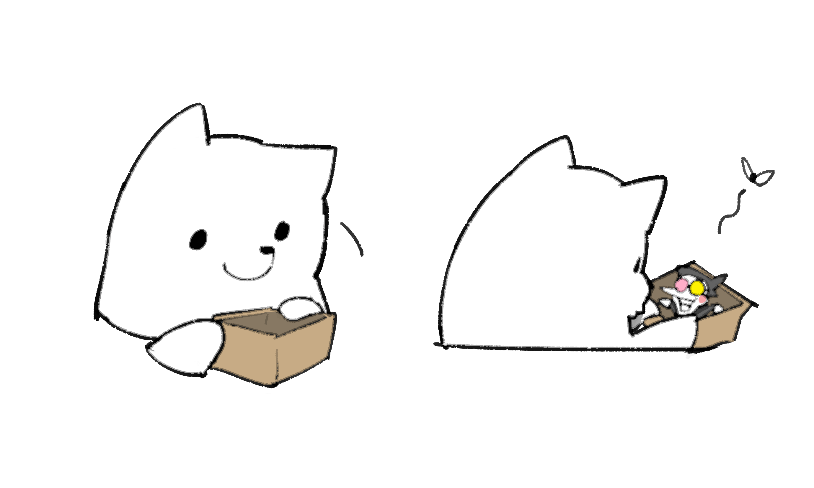
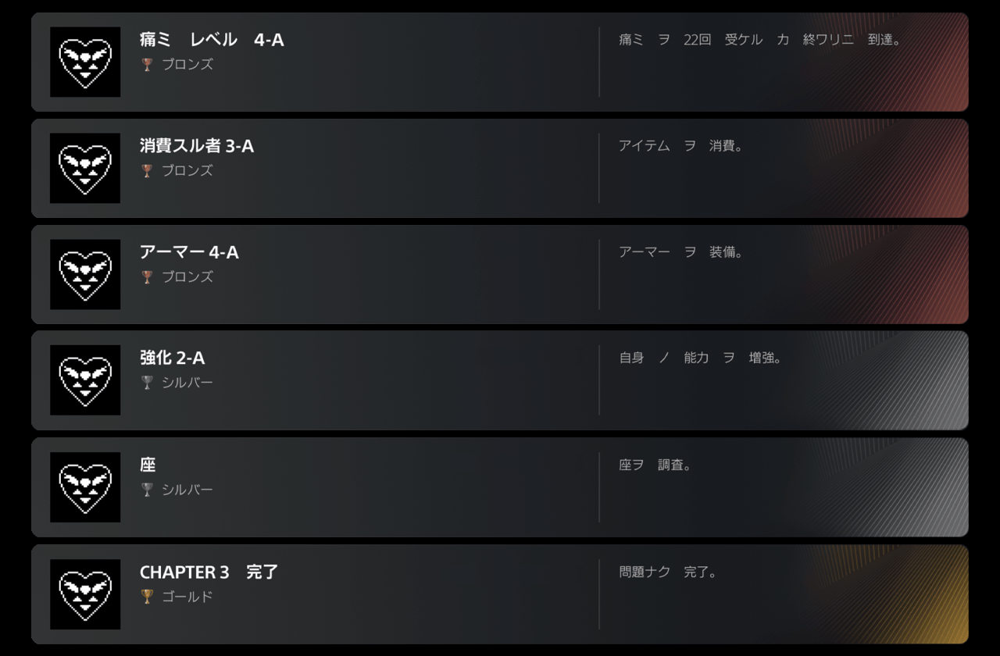

『DELTARUNE』Chapters 1-4 のリリースは…
…っとその前に！いろいろ説明させてください！
まず、Nintendo Switch 2 版の『DELTARUNE』は、各地域の現地時間で 6 月 5 日午前 0 時にリリースされます。ということは、Nintendo Switch 2 版は、日本に住んでいる人はアメリカの東海岸に住んでいる人より 13 時間早くゲットできるということですね。Switch 2 をローンチと同時に手に入れられれば、の話ですが。
じゃあ、他のプラットフォームは…？というわけで、Steam 版、Nintendo Switch 版、PS4 版、PS5 版の公式リリース時間を決めることにしました。リリース時間は…
日本時間の 6 月 5 日 0:00AM です！
つまり、日本以外の場所に住んでいる場合、Steam 版、Nintendo Switch 版、PS4 版、PS5 版の『DELTARUNE』のリリース時間は…
- 太平洋夏時間では 6 月 4 日 8:00AM
- 東部夏時間では 6 月 4 日 11:00AM
- 中央ヨーロッパ標準時では 6 月 4 日 5:00PM
…ということです！
（ニュージーランドとオーストラリアに住んでいる人は、Nintendo Switch 2 をぴったり 0:00AM に手に入れた場合、数時間早くSwitch 2 版『DELTARUNE』をゲットできるわけですが、ややこしいのであなたたちのことは無視して、まだリリースされてないフリをします… フラゲできても、黙っててください）
このメルマガを日本語で読んでいるみなさんにはあまり関係ない話だと思いますが、いずれにせよ、 6 月 5 日の 0 時にプレイするのを楽しみにしていてください！
そして、いいおしらせはまだ続きます！
お得な情報です！
『DELTARUNE』はクロスバイ対応、つまり、PlayStation Store で購入した場合、一度の購入で PS4 版と PS5 版の両方をゲットできます！
そして…
Nintendo Switch と Nintendo Switch 2 でも、両方のバージョンをできるだけお得にお買い求めいただけるようにします。Nintendo Switch 版の『DELTARUNE』を買ったけど、あとから Switch 2 版も欲しくなった場合、Switch 2 版を 300 円でご購入いただけます！先に Switch 2 版を買ったけど、あとから Switch 版も遊んでみたくなった場合も… 300 円で買えます！これで、両方のバージョンの『DELTARUNE』をゲットできる…つまり…両方のバージョンのスペシャルルームを、超お得に遊べるということです！見逃しリスクなしで、安心ですニャ！
＊ 2つめのバージョンを 300 円で購入するには、どちらも同じニンテンドーアカウントを使用してニンテンドーeショップまたは My Nintendo Store で購入する必要があります。

さて、値段の話は置いといて、そろそろ、PlayStation のトロフィーの一部を公開しちゃいましょう！

（全トロフィーのうちの一部です）
感づいた方もいるかもしれませんが、なかなかおもしろいチャレンジができるようになっています。トロフィーは、一度獲得すると消えません。ひとつひとつが、永久に、あなたの功績の指標になる、というわけです…
トロフィーは、獲得条件を達成した「部屋」が終わったタイミングで獲得するように設定してあります。つまり、その前にゲームを閉じれば、獲得できないということ。なので、4つのチャプター全部を、慎重にクリアしていってください。特に、特定の条件下では、「チャプター完了」のトロフィーを獲得できない場合があるかも。普通にプレイしていれば、そんなことにはならないと思いますが…
とはいえ、トロフィーを獲得したかどうかなんて気にせず遊んだほうが、ゲームを楽しめると思います…
…と、以上の話とはなんの関係もないんですが、前に、「スパムトン・ステークスのフィナーレは、別バージョンも用意していた」とお話ししたこと、覚えてますか？
そう言ったこと、僕もやっと思い出しました。
というわけで、スパムトン・ステークスのサイトをアップデートして、別バージョンのフィナーレの動画を掲載しております！
動画を見終わったら、なつかしいついでに、サイトの別の部分もチェックしてみるといいかもしれませんね。僕としてはゲーム本編の内容が「公式」なので、サイト内には特に「必読！」みたいなものはないと思いますが…あちこち見て回るのは、きっと楽しいはずです！
『DELTARUNE』のリリースに向けて、今後は SNS への投稿も増える予定です。SNS はやめました、という方、すばらしい！それでも、僕はまだ投稿します。
各 SNS の公式アカウントは、こちらです…
では、6 月に会いましょう！